|
Na naszej planecie spotykamy inne, bardzo ciekawe budowle czy ¶lady po "czym¶",
czego nie mo¿na dzi¶ racjonalnie wyt³umaczyæ. S± one najczê¶ciej ignorowane i
pomijane w oficjalnych opracowaniach, bo albo nie mo¿na udzieliæ sensownego
wyt³umaczenia albo wyt³umaczenie mo¿e stanowiæ zagro¿enie dla archeologii, a
je¶li ju¿ powstanie jaka¶ hipoteza, to z regu³y nie wykracza poza fantastyczne
bajanie. Z tym musimy siê chyba pogodziæ, dopóki hipotezy bêdzie tworzyæ "firma"
zu¿ywaj±ca najwiêcej dzieciêcych ³opatek, grabek, sitek, miote³ek, pêdzelków i
gruszek do lewatywy. Niektórzy archeolodzy, jako typowi humani¶ci, maj± mgliste albo w
ogóle nie maj± pojêcia o technice, a je¶li ju¿ to wykorzystuj± je do sklejania rozbitych
naczyñ, bo sklejanie sensownych hipotez jako¶ nie im wychodzi. Wielkim hamulcowym jest
te¿ opinia naukowej "rady starszych", nie uznaj±cych ¿adnej krytyki autorytetów
archeologii. Kiedy ich miejsce zajm± ludzie z szerokimi, niezale¿nymi horyzontami
my¶lowymi, którzy nie bêd± siê wstydziæ konfrontacji swych idei z innymi dyscyplinami
naukowymi?
Pozostañmy jeszcze w Egipcie. Ten ¶lad wskaza³ Micha³ Jaworski (sk±din±d doskona³y
m³ody muzyk) przesy³aj±c ciekawe satelitarne zdjêcie z okolic Giza. Widaæ tu tereny
na zachód od kompleksu piramid, w szczerej pustyni. To co wyziera spod piasków
pustyni po prostu zapiera dech w piersiach. Nie wiadomo czym s± zarysy struktur,
bo jeszcze nikt ich nie zbada³. Jak s± du¿e mo¿emy oceniæ na podstawie samych piramid. Trzy
piramidy (pomarañczowa strza³ka), od wielkiej do ma³ej, zajmuj± odcinek oko³o
jednego kilometra. Po prawej stronie od piramid rozci±ga siê dzisiejszy Kair,
po lewej pustynia, na której pó¼niejsza zapewne dzia³alno¶æ ludzi zniszczy³a
bezpowrotnie czê¶æ zagadkowych struktur.
Wygl±da wiêc na to, ¿e te tajemnicze struktury ci±gn± siê na przestrzeni od kilku
do kilkunastu i wiêcej kilometrów, a s³ynne rysunki z pustyni Nazca wygl±daj± przy
nich jak dziecinne zabawy. Kto pozostawi³ te ¶lady? Tego nie okre¶l± na pewno
dzisiejsi specjali¶ci od przesiewania i zamiatania Sahary, chyba ¿e oczekujemy
jakiej¶ teorii o wojskach faraona, które æwicz±c marsze, zwroty i zakrêty wydepta³y
te dziwne linie. Czy to wykonali ludzie? Mo¿e..., tylko jacy ludzie? Przecie¿ zgodnie
z obowi±zuj±c± doktryn± egiptologii, prawie ca³a ludno¶æ Egiptu nie robi³a nic
innego tylko budowa³a przez setki lat piramidy dla faraonów. Kto wiêc odpowiada
za te dziwne ¶lady?
Struktura na dole przypomina ogromne lotnisko. Dwa szerokie, przecinaj±ce siê d³ugie
"pasy startowe" i "¶cie¿ki do ko³owania". Najszersze "pasy" maj± s³abo widoczne
przed³u¿enia w kierunku struktur na pó³nocy i pó³nocnym zachodzie. Czy pas
biegn±cy w kierunku pó³nocno-zachodnim nie jest przypadkiem równoleg³y do
przek±tnych piramid? Czy przypadkiem nie wskazuje kierunku na Delfy i duñski
Traeleborg (przed³u¿enie prostej ³±cz±cej Delfy z duñskim Traeleborgiem wed³ug
Daenikena przechodziæ ma na zachód od piramid w Giza)?
Czym mog³y byæ te struktury? Tego nie prêdko siê dowiemy, bo nie prowadzi siê takich
badañ, a wspó³cze¶ni egiptolodzy wol± omijaæ ten temat z daleka, by nie sprawiaæ
sobie k³opotów nara¿aj±c siê na trudne pytania. Jak bowiem wyt³umaczyæ
wytyczenie prostej linii o d³ugo¶ci ponad 20 km w piaskach pustyni, a do
tego uczyniæ je widocznymi z góry? Czym by³y struktury le¿±ce powy¿ej "lotniska"?
Czy to pozosta³o¶ci po "ulicach" jakiego¶ miejskiego kompleksu, czy te¿
infrastruktury "lotniska"? Te dziwne rysunki ci±gn± siê jeszcze dalej za zachód.
Czy to z tego miejsca egipscy Bogowie i ich synowie wznosili siê do nieba?
Kiedy powsta³y te struktury, skoro w naszych historycznych czasach na zachód od
Giza le¿a³o jezioro Mojrisa?
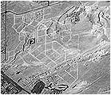 |
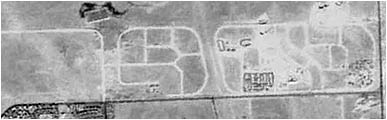 |
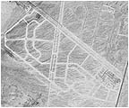 |
Mo¿e to tajne wspó³czesne lotnisko wojskowe (taka egipska strefa 51) lub pozosta³o¶ci
po lotnisku z II wojny ¶wiatowej? Mam w±tpliwo¶ci. Lotniska dzisiejszego Egiptu,
zarówno cywilne i wojskowe znajduj± siê na obrze¿ach Kairu, a w II wojnie ¶wiatowej
nikt nie budowa³ pasów startowych d³u¿szych ni¿ 3 km i do tego szerokich na pó³
kilometra, bo nie by³o takiej potrzeby. Dziwi mnie tak¿e, dlaczego sam Daeniken i
jego "kontynuatorzy" nie wspominaj± nic na ten temat. Nie wierzê, by nic o tym nie
wiedzieli. Mo¿e koncepcja prehistorycznego "kosmodromu" jest tak¿e dla nich zbyt
fantastyczna?
|
Dziwne ¶lady na Malcie i nie tylko |
Przyk³adem tego s± dziwne "koleiny" wy¿³obione w skale wapiennej, spotykane na Malcie,
Ghawdex, ko³o Lixus, w Hiszpanii czy Irlandii. Biegn± zwykle parami, choæ nie s± do
siebie idealnie równoleg³e, krzy¿uj± siê pod ró¿nymi k±tami, a czasem gin± w morzu.
Miejscowa ludno¶æ nazywa je "¶ladami furmanki". A co g³osi oficjalna archeologia?
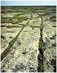 |
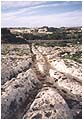 |
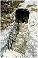 |
|
Azerbajd¿an |
"¦lady furmanki" na Malcie |
Wed³ug niej mog± to byæ - tory kultowe, kalendarz, rodzaj wodoci±gu (nawet pod górkê?)
czy nawet rodzaj pisma i wszystko to powsta³o w epoce br±zu. Z regu³y s± to rowki o
g³êboko¶ci 15 cm, szeroko¶ci oko³o 20 cm i biegn±ce obok siebie w odleg³o¶ci oko³o
1,6 m. Nie zrobi³y tego pojazdy, gdy¿ ¶lady nie s± wszêdzie jednakowo równoleg³e,
nie zrobi³y tego te¿ sanie, gdy¿ zakrêty wygl±da³y by inaczej, nie wy¿³obi³y tego
ci±gnione konary, gdy¿ ¶lady musia³y by byæ wyryte pod k±tem. ¦lady te zakrêcaj±,
krzy¿uj± siê pod ró¿nymi k±tami, a ponadto poprowadzone s± bez wzglêdu na rze¼bê
terenu. Je¶li s± to ¶lady po zwózce materia³ów, to dlaczego nie prowadz± do ¿adnej
budowli?
W terenie "koleiny" przechodz± obok megalitycznych budowli i czasem prowadz± wprost
do morza. Musia³y zatem zostaæ wykonane przed globalnym ociepleniem, które nauka
umiejscawia na 10,7 tysi±ca lat pne., a nie w epoce br±zu 2000 lat pne., jak twierdz±
archeolodzy. Co to mog³o byæ? S±dzê, ¿e nie s± to "koleiny", a pozosta³o¶ci po
kanalikach wyciêtych w skale wapiennej o czym mo¿e ¶wiadczyæ trzecia fotografia.
Warunki klimatyczne przez tysi±ce lat mog³y spowodowaæ zmycie wierzchniej,
wapiennej warstwy i utworzenie siê "kolein". To za¶, ¿e przebiega³y obok
megalitycznych budowli czy "¶wi±tyñ" mo¿e ¶wiadczyæ o tym, ¿e poprowadzono w
nich byæ mo¿e przewody paliwowe, wodne albo energetyczne.
W Egipcie odnaleziono ciekaw± p³askorze¼bê. Przedstawia zapewne kogo¶ znacznego, bo
pospólstwo bardzo rzadko umieszczano na ¶cianach budowli. Byæ mo¿e jest postaæ
kap³ana lub którego¶ z faraonów. W rêku trzyma co¶, czego nie potrafiê nawet
skojarzyæ (Bep-Koroti chodzi³ z "kijem" zwanym kop, który mia³ w³asno¶ci
obezw³adniaj±ce). Uczeni dopatrzyliby siê tu zapewne jakiego¶ atrybutu w³adzy.
Ja widzê tylko jaki¶ patyk, ale mniejsza z tym. Przyjrzyjmy siê d³oni.
Co widaæ? Ta d³oñ ma sze¶æ palców! Czy to ¿art rze¼biarza? Chyba nie. Na "urzêdowych"
p³askorze¼bach nie uprawiano raczej satyry. Czy to jest wybryk natury, czy kiedy¶
naprawdê istnia³a rasa o takiej liczbie palców? W dorzeczu Amazonki, ¿yje
indiañskie plemiê Ogha-Mongulala. Tam w Manaus, Karl Brugger dziennikarz,
historyk i socjolog w jednej osobie spisa³ w roku 1972 opowie¶æ us³yszan±
od wodza plemienia Tatunca Nara o historii tego plemienia. Dzieje s± spisane
w "Kronice z Akakor" w sk³ad której wchodz± "Ksiêga Jaguara" i "Ksiêga Or³a".
Fragment "Kroniki z Akakor" przytaczam poni¿ej.
| |
Po¶rodku pomieszczenia, z którego ¶cian sp³ywa³o tajemnicze ¶wiat³o, sta³y cztery
bloki z przezroczystego kamienia. Kiedy z wielkim szacunkiem siê do nich zbli¿y³em,
dostrzeg³em w nich cztery tajemnicze istoty. Cztery ¿ywe trupy. Czworo ¶pi±cych ludzi.
By³o tam trzech mê¿czyzn i jedna kobieta. Le¿eli w p³ynie, który zakrywa³ ich a¿ po
piersi. We wszystkim przypominali ludzi. Tyle ¿e mieli po sze¶æ palców u nóg i r±k.
|
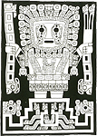 |
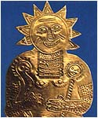 |
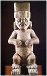 |
Chcia³em ju¿ uznaæ sprawê za za³atwion± jako ciekawostkê, ale odnalaz³em jeszcze
dwa ¶lady mówi±ce o istotach z czterema palcami. Arnold Mostowicz opisuje legendê,
wed³ug której, w czasach gdy nie by³o jeszcze ludzi, nad jeziorem Titicaca pojawi³
siê wielki, b³yszcz±cy statek kosmiczny, który wyl±dowa³ na wyspie na ¶rodku jeziora.
Z pojazdu wysiad³a kobieta o ludzkim wygl±dzie, o bardzo wyd³u¿onej g³owie, d³ugich
uszach i czterech palcach po³±czonych b³on±. Nazwano j± Orejona (d³ugoucha).
Eksponat (po prawej) pochodzi z kolekcji ojca Carlo Crespi, misjonarza katolickiego w
Ameryce Po³udniowej. Jest to tzw. Bóstwo z gwiazd.
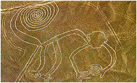 |
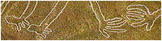 |
Zauwa¿my, ¿e bóstwo dla odmiany
ma po cztery palce u r±k i nóg. Uczeni interpretuj± to jako liczyd³o.
Obok rysunek centralnego fryzu "Bramy S³oñca" w Tiahuanaco, a wiêc miejsca tu¿
obok jeziora Titicaca. Na nim wyra¼nie widaæ, ¿e centralna postaæ cz³ekopodobna ma
po cztery palce u d³oni. Na ostatnim zdjêciu rze¼ba z Ameryki ¦rodkowej. Rêce maj±
widoczne po cztery palce, ale to ¿aden dowód gdy¿ u³o¿enie r±k mo¿e sugerowaæ, ¿e kciuki
s± niewidoczne. Co do stóp nie mo¿e byæ w±tpliwo¶ci - maj± po cztery palce.
Okazuje siê, ¿e ró¿na ilo¶æ palców, to nie tylko k³opoty cz³owiekopodobnych ale te¿
zwierzaków. Tu powinni wypowiedzieæ siê darwini¶ci - jaka¿ to odmiana ma³p w przesz³o¶ci
mia³a tak ró¿n± ilo¶æ palców. Wizerunek takiej "ma³py" znajduje siê na pustyni Nazca.
U nóg po trzy palce, u r±k cztery i piêæ. Ja rozumiem, ¿e oficjalna nauka nie zwraca
na to uwagi, bo us³yszymy zapewne o g³upich przodkach, którzy nie umieli liczyæ do
piêciu, albo ¿e ma³pa wpad³a do tartaku i w panice przebieg³a pod trakiem. Trak
odpada, bo mówimy o epoce kamienia nawet nie ³upanego a zbieranego, a co do inteligencji
naszych przodków mam zdanie zupe³nie odmienne w odró¿nieniu do dzisiejszych naukowców.
Nasi przodkowie zmys³ obserwacji i pamiêæ mieli du¿o lepiej rozwiniêt± i co
najwa¿niejsze prawdziwo¶æ przekazu u nich by³a rzecz± najwy¿szej rangi, rzecz nie
do pomy¶lenia u dzisiejszych zdziwacza³ych archeologów.
|
Palce Moai z Wyspy Wielkanocnej |
Ka¿dy z nas ogl±da³ ju¿ tajemnicze pos±gi z Wyspy Wielkanocnej. Ale czy ogl±da³
dok³adnie? Czy nic nie usz³o naszej uwadze? Czy ka¿dy ogl±da³ ich palce? Na rêce
Moai zwróci³ uwagê, nie¿yj±cy ju¿ dzi¶, chilijski artysta-plastyk Lorenzo Dominguez
(rysunki palców s± jego autorstwa). Czy rasa zamieszkuj±ca onegdaj Wyspê Wielkanocn±
by³a inna ni¿ nasza?
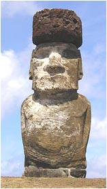 |
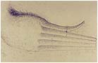 |
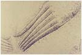 |
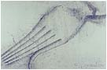 |
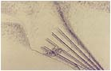 |
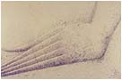 |
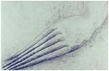 |
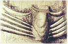 |
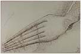 |
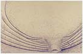 |
Zapewne tak. Nie tylko d³onie mia³a inne, lecz tak¿e wyró¿nia³a siê d³ugimi uszami.
Zwróæmy te¿ uwagê na dziwne zakoñczenie "pêpka" i na dziwn± jego "ozdobê". Zbadaæ
genetycznie potomków tej rasy ju¿ nie mo¿na, gdy¿ w po³owie XIX wieku Peruwiañczycy
wywie¼li prawie wszystkich mieszkañców wyspy do wydobywania "guano", a i nie ma
tak¿e pewno¶ci czy byli oni w tej grupie. Istniej± tak¿e przekazy, ¿e ostatni
"d³ugousi" wyginêli w wojnie z tubylcami na d³ugo przed przybyciem Europejczyków.
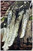 |
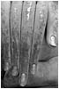 |
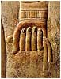 |
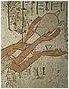 |
Podobnie d³ugie palce posiada³ te¿ Budda i inni hinduscy Bogowie. Czy smuk³o¶æ d³oni
by³a przypisana rasie d³ugouchych? Koñce palców s± ³agodnie wygiête do góry, co u
nas jest raczej ma³o spotykan± cech±. Reliefy i rysunki z Egiptu te¿ ukazuj±
Egipcjan z d³ugimi smuk³ymi palcami. Zwróæmy przy tym uwagê na sposób trzymania
sznura w d³oni. Spróbujmy tak uchwyciæ sznur, by paznokcie dotyka³y prawie
nadgarstka, a kciuk wystawa³ poza zgiête palce. Wydaje siê, ¿e nasze palce s±
po prostu za krótkie. Oczywi¶cie, ¿e i my mo¿emy tak u³o¿yæ d³oñ, ale jak s±dzê
jest to chwyt bardzo niewygodny i mêcz±cy.
|
Czy dinozaury widzia³y cz³owieka ? |
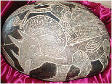 |
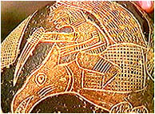 |
Czy amerykañski re¿yser wykorzysta³ rysunki z kamieni do stworzenia scenariusza do
filmu "Rodzina jaskiniowców"? Czy mo¿e Fred Flinston istnia³ naprawdê? Czy to, co
widaæ na zdjêciach obok, to czo³gi i samoloty prehistorycznej armii? Czy nie
¶wiadczy to wreszcie o wielkich osi±gniêciach w dziedzinie oswajania zwierz±t
czy mo¿e zdolno¶ci porozumiewania siê z nimi? Na rysunkach z Ica wyra¼nie widaæ
istotê cz³ekopodobn± jad±c± na... triceratopsie i lec±c± na jakim¶ ptaku o wielko¶ci
ma³ego samolotu. Ale przecie¿, zgodnie z nauk±, dinozaury zaczê³y
wymieraæ 65 milionów lat temu i trwa³o to "tylko" przez okres 2 milionów lat!
Wed³ug encyklopedii Triceratops, to gad kopalny, dinozaur o d³ugo¶ci cia³a ok. 6 m
i wysoko¶ci ok. 2,6 m. (wymiary wiêkszego konia), który ¿y³ w górnej kredzie
(kreda: 135-70 mln lat temu) w Ameryce Pó³nocnej. Ptaka nie uda³o mi siê
zidentyfikowaæ. Zwierzaki wydaj± siê byæ oswojone. Je¼dziec ma pod sob± siod³o,
pilot te¿. W rêkach trzymaj± co¶ w rodzaju przyrz±du do "rêcznej zmiany biegów".
Z ust je¼d¼ca wydobywa siê "dymek", co mo¿e oznaczaæ, ¿e oddycha lub wydaje komendy
dla "pojazdu". Zwróæmy tak¿e uwagê na jako¶æ rytów. Linie owalne, faliste
czy pó³okrêgi s± wykonane jakby jednym "poci±gniêciem" d³uta. Jakich u¿yto
tu narzêdzi? Czy naprawdê by³y to kamienne narzêdzia czy te¿ u¿ywano czego¶
twardszego od kamienia?
Ica to wioska le¿±ca na po³udniu Peru. Tylko w tym rejonie znaleziono kamienie z
dziwnymi rytami. Dziwnymi dlatego, ¿e przedstawiaj± ogl±danie komet przez teleskop,
transplantacjê serca, dziwne kszta³ty interpretowane jako stare kontynenty i
oczywi¶cie zwierzêta, które dawno nale¿± do przesz³o¶ci. Do przesz³o¶ci, która
liczy dziesi±tki milionów lat. Kolekcjê posiada dr. Cabrera i liczy ona ponad
20 tysiêcy kamieni, a jego s±siad posiada ponoæ kolekcjê 11 tysiêcy. Wiêkszo¶æ
tych kamieni eksperci uznali za prawdziwe, gdy¿ warstwa tlenków pokrywaj±ca kamieñ,
pokrywa tak¿e i ryty. Ponadto ciê¿ar w³a¶ciwy kamieni jest wiêkszy (na skutek
procesów chemicznych jakie w nich zasz³y) ni¿ znajdowanych wspó³cze¶nie. Jaki
jest wiek tych kamieni nauka nie potrafi okre¶liæ. Jedyn±, uzasadnion± naukowo
dat± jak± podano jest ta - s± bardzo stare.
I jeszcze fotografia z azjatyckiej miejscowo¶ci Sigiriya (Sri Lanka) przedstawiaj±ca
wej¶cie do skalnej ¶wi±tyni. Po obu stronach wej¶cia wykuto (a mo¿e raczej wyciêto)
w litej skale dwie stopy jakiego¶ zwierzêcia. Jakie zwierzê mia³o skierowane do
przodu trzy pazury? Czy to s± nogi ptaka, smoka czy mo¿e... dinozaura?
|
Jak to jest z tym neandertalczykiem ? |
W szkole uczono i uczy siê nadal, ¿e neandertalczyk stanowi³ formê przej¶ciow± w
ewolucji cz³owieka. Wypar³ go dopiero tzw. cz³owiek z Cro-Manogne i dopiero my
jeste¶my w pe³ni rozwiniêt± form± cz³owieka my¶l±cego. Spotyka siê w tej chwili
teorie, ¿e neandertalczyk ¿y³ równolegle z cz³owiekiem kromanioñskim, a nawet,
¿e mia³ bli¿ej do nas ni¿ do ma³py. Podobno nieobce mu by³y uczucia i chowanie
zmar³ych. Umia³ te¿ podobno mówiæ (odnaleziono w jego szkielecie ko¶æ gnykow±).
Tymczasem w ksiêdze Henocha czytamy zupe³nie co¶ innego - cz³owiek od samego pocz±tku
umia³ mówiæ:
| |
Przemówi³em tchnieniem ust moich i jêzykiem cielesnym, który Bóg da³ ludziom
zrodzonym z cia³a, aby mogli siê nim pos³ugiwaæ. Da³ im tchnienie, jêzyk i usta,
aby mogli siê porozumiewaæ.
|
Rze¼by zaginionych cywilizacji mówi± jednak co¶ innego. Oto rze¼ba olmecka
przedstawiaj±ca kogo¶, kto nie przypomina cz³owieka wspó³czesnego, ale w³a¶nie
neandertalczyka. Rze¼by z Copan (Majowie) stawiaj± poprzeczkê wy¿ej. Twarz,
owszem, neandertalczyka, ale czwarty rysunek przedstawia ni mniej ni wiêcej
tylko neandertalczyka wykonuj±cego czynno¶æ w zasadzie zarezerwowan± dla ludzi.
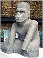 |
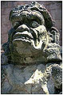 |
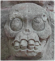 |
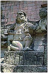 |
|
Nie jest to poza ma³poluda, a raczej cz³owieka s³u¿±cemu komu¶, poza przypominaj±ca
raczej sk³adanie przysiêgi na jak±¶ wa¿n± rzecz albo pokazywanie trofeum wojennego,
b±d¼ znaku rodowego. Czaszka wykuta w kamieniu na innej budowli Majów pokazuje
uzêbienie przypominaj±ce uzêbienie postaci ze zdjêcia obok. Czy to przypadek,
fantazja artysty czy ówczesna rzeczywisto¶æ?
Uwiecznienie wizerunku neandertalczyka w rze¼bie i na do¶æ eksponowanym miejscu
¶wiadczy nie tylko o wa¿no¶ci tej rasy, ale tak¿e o tym, ¿e cz³owiek neandertalski
¿y³ równolegle z ówczesnymi twórcami rze¼b. O tym powinien mówiæ napis poni¿ej
rze¼by, ale nie spotka³em przet³umaczenia tego napisu na jêzyk zrozumia³y dla
ludzi. Jak wyt³umaczyæ "neandertalski" wygl±d hinduskiego boga Hanumana, zwanego
zreszt± królem ma³p? Co ciekawsze Hanuman, wed³ug staro¿ytnych przekazów by³
tak¿e ¶wietnym pilotem.
Najnowsze badania ju¿ mówi± o tym, ¿e obie rasy - neandertalczyk i cz³owiek Cro-Magnon -
¿y³y obok siebie przez co najmniej ostatnie 80 tys. lat. Mówi siê tak¿e o tym, ¿e
neandertalczyk wygin±³ 35 tys. lat temu. To sk±d wziêto wzór? Czy cz³owiek kamienia
³upanego potrafi³ odtwarzaæ wygl±d na podstawie czaszki? A mo¿e budowniczowie Copan
¿yli w czasach, gdy obie rasy ¿y³y obok siebie?
Do dzi¶ historycy nie dali konkretnej odpowiedzi do czego mia³y s³u¿yæ trapezoidalne
nisze. Wed³ug ich hipotezy by³y to miejsca na ustawienie figurek Bogów. Ale czy to
jest prawda? Jest ich tak du¿o, ¿e dzisiejszy inkaski panteon nale¿a³oby powiêkszyæ
co najmniej kilka razy. Ponadto nie pokuszono siê o sprawdzenie, czy przypadkiem
nie posiadaj± jednakowych wymiarów, co mog³oby oznaczaæ, ¿e stworzono je dla
przechowywania czego¶, co nazwaliby¶my dzisiaj rzecz± standardow±.
Zdjêcia daj± jednak do my¶lenia. Widaæ wyra¼nie, ¿e z nisz "co¶" wyciek³o i to "co¶"
wyra¼nie odbarwi³o kamieñ. Pocz±tkowa barwa kamienia zosta³a zmieniona i wyra¼nie
ró¿ni siê od otoczenia. Co to by³ za p³yn? Wino mszalne czy p³ynny Bóg? Pró¿no
jednak szukaæ prób ustalenia sk³adu tego p³ynu czy chocia¿by ustalenia co mog³o
zostawiæ na ¶cianach te smugi. Mo¿na odnie¶æ wra¿enie, ¿e do wycieku musia³o
doj¶æ jednocze¶nie i w ca³ym Machu Picchu. Czy te smugi spowodowa³y wieloletnie
opady deszczu? Je¶li by tak by³o, to dlaczego nie zmy³y jednolicie ca³ych ¶cian?
Czy w niszach przechowywano naczynia z "czym¶" w postaci p³ynnej czy pó³p³ynnej?
Na te pytania jeszcze nikt nie próbowa³ odpowiedzieæ.
|
Pierzast w±¿ czy w±¿-ptak? |
Przypatrzmy siê uwa¿niej najbardziej znanemu wê¿owi na ¶wiecie, który jako jeden z nielicznych
awansowa³ na pierwszego Boga narodów Ameryki ¦rodkowej.
Zacznijmy jednak od przedstawienia
podstawowego elementu rzeczonego Boga jakim jest pióro. Pióro jakie jest ka¿dy widzi.
Proszê siê obra¿aæ. Widok pióra przedstawiam dla tych, którzy byæ mo¿e nie widzieli go
na w³asne oczy i dlatego imiê Quetzalcoatla przet³umaczyli jako wê¿a okrytego piórami
ptaka Quetzala. Rzeczone pióro jako czê¶æ centraln± i rzek³bym no¶n± posiada tzw. stosinê, do
której przymocowane s± tzw promienie (z haczykami lub bez).
Jako ludzie, rysowanie lub rze¼bienie pióra rozpoczêliby¶my od stosiny. Jest to g³ówna czê¶æ,
od której zale¿y kszta³t i wielko¶æ pióra. I tak zapewne post±pi³by te¿ cz³owiek w
dawnych czasach. Mia³, byæ mo¿e, ma³y zasób wiedzy, ale z powodzeniem nadrabia³ to
zmys³em obserwacji.
A jak wygl±da pióro naszego wê¿a? Spójrzmy na zdjêcie po prawej. Czy to jest pióro? Tak
nie wygl±da nawet li¶æ palmowy do pokrycia dachu. Czy staro¿ytny rze¼biarz nie by³
bystrym obserwatorem, czy te¿ do ujrzenia tu piór nale¿y posiadaæ dyplom archeologa
z piêtnastoletnim sta¿em?
W nazwie brzmi te¿ nazwa piêknego
ptaka Quetzala. Ptaszek ten, niezbyt du¿y, by³ i jest ceniony przez Indian dla swego upierzenia w
kolorach zielonym, czerwonym i bia³ym.
Quetzalcoatl jest azteck± nazw± Boga, który wystêpuje jeszcze
pod imionami Kukulcan (Majowie) czy Gucumatz (Quiche). Trudno mi wypowiadaæ siê na
temat samego przet³umaczenia imienia Boga, ale s±dzê, ¿e mo¿na je t³umaczyæ zarówno
jako "pierzasty w±¿" lub te¿ "w±¿-ptak". Chyba jednak najbardziej odpowiedni± nazw±
by³a by - "lataj±cy w±¿". Poni¿ej piêkny komplet wizerunków pierzastego wê¿a.
Rze¼by te, wed³ug nauki, powsta³y
stosunkowo niedawno. Je¶li wykonali je Aztecy otrzymujemy rok 1250 ne, a je¶li
Majowie mo¿emy cofn±æ datê do roku 1500 pne. Jak± datê jednak by¶my nie przyjêli,
pozostaje problem narzêdzi. Czy te rze¼by wykonano z pomoc± kamiennego d³utka? Czym
cyzelowano drobne szczegó³y? Jakim sposobem nadano kamieniowi tak± g³adko¶æ i po³ysk?
Zwróæmy uwagê
na ¶rodkow± postaæ, przedstawiaj±c± Quetzalcoatla jako Boga S³oñca. Czy na reliefie
nie wygl±da jak Bóg zlatuj±cy z nieba otoczony p³omieniami? Czy przedmiot poni¿ej
nale¿y interpretowaæ jako S³oñce? Byæ mo¿e, choæ ja zinterpetowa³bym to jako gwiazdê.
Bóg S³oñca czy bóstwo z gwiazd? S³oñce te¿ jest gwiazd± i staro¿ytni chyba o tym wiedzieli.
Inne postacie pierzastego wê¿a przedstawione w Teotihuacan, Uxmal i Xochicalco. Tutaj
te¿ z trudno¶ci± mo¿na ujrzeæ pióra okrywajace cia³o wê¿a, a ponadto ten z Xochicalco
sk³ada siê z segmentów mog±cych zginaæ siê nawet pod k±tem prostym. Podsumujmy cechy
tego ciekawego bóstwa.
•
okrywaj±ce go pióra wcale nie przypominaj± piór,
•
w±¿ mo¿e oplataæ postaæ lub te¿ postaæ mo¿e przebywaæ w jego wnêtrzu,
•
w±¿ posiada du¿o wiêcej zêbów ni¿ jego naturalny odpowiednik i bardziej tym przypomina
chiñskiego smoka ni¿ przedstawianego grzechotnika,
•
w stosunku do postaci w±¿ wykazuje uleg³o¶æ, co pokazuj± z³o¿one "zêby jadowe",
•
w±¿ z Teotihuacan posiada wokó³ g³owy dwie aureole, ale czy to s± pióra?
•
w±¿ z Uxmal posiada "hak holowniczy" na ¶rodku pyska, a w±¿ z Teotihuacan zakrêcone rogi po
obu stronach pyska,
•
jêzyk wê¿a w niektórych przypadkach wygl±da co najmniej dziwnie (obok).
Czy ten jêzyk nie przypomina jakiego¶ zestawu technicznego? Relief na pierwszym "jêzyku"
jest identyczny z reliefem na jêzyku rze¼by S³oñca na s³ynnym kamiennym kalendarzu Azteków.
Drugi za¶ w ogóle nie przypomina rozdwojonego jêzyka wê¿a, za to pe³no w nim jakich¶
pasów, ta¶m, dr±¿ków i przycisków. Czy tak nie wygl±da³ odpiêty pas ówczesnego pilota?
Czy to jest przedstawienie techniki znajduj±cej
siê w ¶rodku wê¿a? To w³a¶nie mia³ chyba na my¶li twórca rze¼by. Czy co¶ jeszcze
mo¿na powiedzieæ o staro¿ytnych wê¿ach i samym Quetzalcoatlu? Mo¿na.
•
Majowie twierdz±, ¿e trzej prabogowie, których zwano piorunem, b³yskawic± i prêdko¶ci±,
zst±pili z nieba razem z Bogiem o dwoistej postaci Tepeu Gucumatzem. Naukowcy oczywi¶cie
twierdz±, ¿e chodzi tu o personifikacjê si³ natury. Stara ¶piewka, stosowana zawsze gdy
nie wiadomo co powiedzieæ lub nie staje wyobra¼ni. Tak samo mo¿na
opisaæ samolot czy rakietê (by³o szybko, g³o¶no i jasno, a na dodatek z jednego
Boga wyszed³ drugi),
•
Kukulcan by³ "niebiañskim wê¿em" i "niebiañskim potworem", który co pewien czas przybywa³
na ziemiê. Jaki w±¿ potrafi odbywaæ kosmiczne podró¿e?
•
Quetzalcoatl wed³ug wyobra¿eñ Indian mia³ twarz jak ciê¿ki kloc, a nie jak cz³owiek,
a jego broda by³a bardzo d³uga i wielka. Swoj± twarz stara³ siê zachowaæ w ukryciu.
Cz³owiek czy maszyna?
 |
 |
"Jego broda by³a bardzo d³uga i wielka". Nie wiem czy porównanie latajacego wê¿a do
wspó³czesnego samolotu jest trafne, ale analogia jest uderzaj±ca. Mo¿na siê dopatrzeæ
otwartej paszczy i d³ugiej brody. Czy rze¼biona paszcza wê¿a nie jest zaopatrzona w zawias?
Oko wê¿a
mo¿e symbolizowa¿ patrzenie przez przezroczyst± kabinê (swoj± twarz stara³ siê zachowaæ
w ukryciu), a z otwartej paszczy Boga wychodzi³
przecie¿ drugi Bóg. Spytaæ mo¿na zapewne, a gdzie oni l±dowali? Uczeni do dzi¶ nie wiedz± co pocz±æ
z kilkuset kilometrow± sieci± prostych, szerokich i wypoziomowanych dróg na ca³ym Jukatanie,
choæ Indianie mówi± wprost - to by³y drogi dla Bogów.
Z tego wszystkiego mo¿na wyci±gn±æ wniosek, ¿e wê¿a nale¿y potraktowaæ jako urz±dzenie stricte
techniczne. Wê¿e potrafi± lataæ. Potrafi± przenosiæ w sobie Bogów. Z tego te¿ powodu, jak
s±dzê, wê¿a nie otacza³y pióra. Wê¿a otacza³y p³omienie i byæ mo¿e
mieni³y siê czerwono, b³êkitnie i zielonkawo jednocze¶nie, w kolorach piór ptaka Quetzala.
Z przedstawionych artefaktów wyci±gn±æ mo¿na jeszcze jeden wniosek. W sztuce Ameryki ¦rodkowej
spotykamy dwa rodzaje wê¿y. Same oraz z postaci± w ¶rodku. S±dzê, ¿e wê¿e z postaci± w swoim
wnêtrzu obrazuj± niebezpieczny pojazd, którym poruszali siê Bogowie. Same za¶ wê¿e pe³ni³y funkcjê znaku
ostrzegawczego przed niebezpieczeñstwem. St±d takie wizerunki na piramidach, przed nimi
lub w ich pobli¿u, które pe³ni³y tak± sama rolê jak egipskie kobry na niektórych
budynkach Egiptu. Mówi³y zwyk³ym ludziom - nie zbli¿aj siê, tu czeka ciê tylko ¶mieræ.
|
Brody - zarost czy element techniki? |
Przypatrzmy siê brodom Bogów i faraonów.
Czy na pewno jest to broda w pe³nym tego s³owa znaczeniu? "W³osy" wyrastaj± tylko
z okre¶lonego miejsca na czubku brody, a reszta twarzy jest g³adka. O ile w takiej
brodzie wystêpuj± wszyscy faraonowie, o tyle brodê tak± nosz± tylko niektórzy Bogowie
i pomniejsze bóstwa. Brodê widzimy u Ozyrysa, Atona, Ptaha oraz u nilowego bóstwa Hapy.
Ogl±daj±c wizerunki Bogów, widaæ ¿e broda u nich jest jakby elementem naturalnym, ale
wizerunki niektórych faraonów wskazuj± na to, ¿e broda jest sztuczna i doczepiana
do twarzy. Mamy tak¿e dwa rodzaje "bródek". Jedne w postaci poprzecznie pr±¿kowanej,
drugie (np. w masce pogrzebowej Tutankhamona) w postaci splecionej w warkocz.
Czy jest to "ma³powanie" boskiego elementu przez faraonów? Czy mo¿e by³ to
jaki¶ element techniczny wspó³dzia³aj±cy z koron±? Na rysunku i reliefach widaæ,
¿e broda jest utrzymywana czym¶ w rodzaju "ta¶my" i po³±czona z nakryciem g³owy,
a s±dz±c z kszta³tu mo¿e byæ
elementem sztywnym. Nie s±dzê równie¿, aby w ten sposób starano siê podkre¶liæ
kszta³t dolnej szczêki faraona. Na to, ¿e broda by³a elementem sztucznym i "doczepianym"
a tak¿e niezwykle wa¿nym, wskazuje tre¶æ Tekstów Piramid, gdzie jest mowa o jakim¶
buncie, podczas którego skradziono brodê Atuma.
A co s±dziæ o ostatnim zdjêciu? Postacie ludzkie z przyczepionymi brodami, ale w
kszta³cie rozwidlonego jêzyka wê¿a(?). Widaæ wyra¼nie, ¿e jêzyki nie wychodz± z
ust postaci, ale w jaki¶ sposób s± przyczepione do brody. Tê analogiê do brody
Bogów i faraonów odnalaz³em po drugiej stronie Atlantyku w El Baul w Ameryce ¦rodkowej.
Egipt z Ameryk± ¦rodkow± ma podejrzanie du¿± ilo¶æ podobieñstw i analogii?
|
Skorpion - cecha czy znak zodiaku? |
Nie mniej intryguj±cym elementem staro¿ytnych reliefów jest mnogo¶æ symboli zwierzêcych.
Zwykle t³umaczy siê to tym, ¿e Bogowie mogli wystêpowaæ pod postaciami zwierz±t. Mo¿liwe,
ale dlaczego wiêkszo¶æ z tych postaci zwierzêcych, przynajmniej w Egipcie, ma swoje
odbicie w znakach Zodiaku? Kot, krokodyl, ibis, ma³pa, krogulec, byk, baran, lew,
osio³, skarabeusz, w±¿, pies - prawie wszystkie znaki egipskiego Zodiaku mo¿na odnale¼æ
w personifikacjach Bogów.
Czy postaæ lub znak sytuowany w pobli¿u Boga czy faraona mia³ symbolizowaæ jego cechê
czy raczej by³ zwi±zany ze znakiem Zodiaku? Czy znak skorpiona mia³ symbolizowaæ
"podstêpn± ¶mieræ" czy raczej wydarzenia z czasu ery skorpiona? Zdajê sobie sprawê, ¿e
interpretacja nie mo¿e zostaæ przyjêta z uwagi na odleg³o¶æ w czasie (ostatnia era
skorpiona to lata 17594-15866 pne.) ale czy jest niemo¿liwa?
Kamieñ ze znakami Zodiaku z Indii ju¿ opisywa³em, gdzie zadziwiaj±cym przekazem
zdaj± siê byæ stopy nakazujace patrzeæ w stronê zodiakalnego Skorpiona. Na drugim
zdjêciu pokazujê fragment reliefu na naczyniu z Egiptu, gdzie obok faraona
wystêpuje skorpion. Postaæ jest interpretowana jako egipski w³adca predynastyczny,
a wiêc ¿yj±cy przed faraonem Menesem. Czy "kwiatek" nad skorpionem nie nakazuje
szukaæ skorpiona na niebie, w gwiazdach? Wydaje siê, ¿e tak.
|
Stopione kamienie Sacsayhuaman |
Do ciekawych i niewyja¶nionych rzeczy w "Jastrzêbich ska³ach" nale¿± tak¿e "zeszklone
kamienie", w których Erich von Daeniken dopatruje siê u¿ycia broni j±drowej. Gdyby tak
by³o, to w zasadzie "zeszklenie" winno wystêpowaæ na ca³ej powierzchni kamiennego
muru i tylko na ¶cianach zwróconych w jednym i tym samym kierunku, w kierunku eksplozji.
Tak jednak nie jest.
Na zdjêciu widoczny
jest naro¿nik, w którym jeden z kamieni nie zosta³ "zeszklony", a posiada tylko
nacieki, które prawdopodobnie sp³ynê³y z kamienia le¿±cego nad nim. Dlaczego
"zeszklenie" wystêpuje na wszystkich
kamieniach obok, a na tym jednym nie? Dlaczego nie ma go na kamieniach u góry?
Górne byæ mo¿e zosta³y dobudowane pó¼niej, ale kamieñ z naciekami na samym spodzie
musia³ byæ tam od samego pocz±tku. Najprawdopodobniej dzia³a³a tu wysoka temperatura,
ale czy by³a wynikiem u¿ycia broni j±drowej?
Czy mamy tu do czynienia z tworzeniem warstwy ochronnej na powierzchni kamienia przy
pomocy wysokiej temperatury, czy te¿ z rozgrzewaniem kamiennych bloków, tak by po
uzyskaniu plastyczno¶ci, kamieñ sam "dopasowa³" siê do pozosta³ych wype³niaj±c
istniej±ce luki miêdzy nimi? Ten jeden nie "zeszklony" kamieñ nie daje mi jednak spokoju.
Czy o nim akurat zapomniano, czy te¿ mamy do czynienia z przejawem "boskiego"
brakoróbstwa?
Na ¶lad naprowadzi³ mnie Olek z Bielska Bia³ej prosz±c o pomoc w zidentyfikowaniu
"dziwnych" kwadratów, które znalaz³ przegl±daj±c rejon Sudanu na mapach satelitarnych
Google. Nie mam do¶wiadczenia w interpretacji zdjêæ lotniczych, a tym bardziej
satelitarnych, ale ju¿ na pierwszy rzut oka widaæ, ¿e raczej nie s± to twory naturalne.
Zagadkowa formacja znajduje siê w Sudanie na pograniczu z Czadem i Republik±
¦rodkowo-Afrykañsk± w odleg³o¶ci oko³o 100 kilometrów na wschód od tej ostatniej,
za¶ na wschód od formacji i lekko na po³udnie oko³o 100 km le¿y wioska Rahad al-Bardi.
Ca³o¶æ tej zagadkowej formacji tworz± trzy kwadraty. Dwa s± prawie identyczne z wygl±du
o ciemnym obramowaniu,
podobnej wielko¶ci i jednakowym ukierunkowaniu, trzeci za¶ przekrzywiony ma w ¶rodku
regularnie roz³o¿one bia³e "plamki".
Wytyczenie i wykonanie tak d³ugich prostych elementów nie jest te¿ chyba dzie³em
dzisiejszych mieszkañców Sudanu.
Na ¶rodkowym zdjêciu widaæ trzy kwadraty, dwa prawe o bokach oko³o 10 kilometrów, a lewy
(mniejszy i lekko przekrzywiony) o bokach oko³o 7 kilometrów. Ponadto lewy kwadrat
jest jakby usiany regularnymi, bia³ymi plamkami. Prawe kwadraty dzieli odleg³o¶æ
ponad 20 kilometrów. Jakie wspó³czesne tubylcze plemiê by³o w stanie wytyczyæ w
terenie tak d³ugie proste kierunki? Wygl±d trzeciego kwadratu odbiega od dwóch pozosta³ych.
Trudno wyrokowaæ czym s± te bia³e twory. Jak na formacje skalne posiadaj± zbyt
regularne kszta³ty. Czy to s± jakie¶ poletka uprawne czy pozosta³o¶ci jaki¶ budowli,
nie wiem.
W zbli¿eniu pokazane s± czê¶ci centralne dwóch górnych kwadratów,
gdzie w ich ¶rodku widaæ jak±¶ formacjê znajduj±c± siê dok³adnie na przeciêciu dwóch
prostych "dróg", które dziel± kwadraty na cztery jednakowe czê¶ci. Linie wytyczone
przez "drogi" dwóch górnych kwadratów zbiegaj± siê w górach na pó³noc od kwadratów,
na czym¶ w rodzaju p³askowy¿u(?). Centrum trzeciego
kwadratu uleg³o prawdopodobnie najwiêkszemu zatarciu, choæ i tam mo¿na dopatrzyæ siê
pozosta³o¶ci prostych "dróg". Podobny schemat mo¿na zaobserwowaæ w budowie
kompleksu "swi±tynnego" Angkor w Kambod¿y. Je¶li kto¶ wie, co to mo¿e byæ, proszê
o kontakt (link do zdjêcia).
Dziêkujê ci Olek.
Na d¿wiêk s³owa katakumby wszystkim bez wyj±tku nasuwa siê skojarzenie z
prze¶ladowaniem chrze¶cijan w staro¿ytnym Rzymie. Jednak samo s³owo ³aciñskie
oznacza podziemny cmentarz. Jedn± z "ciekawszych" hipotez na temat ich powstania
jest brak miejsca na groby na powierzchni ziemi, bo ziemia w Rzymie by³a bardzo droga.
Katakunby s± spotykane nie tylko w Rzymie. Sa tak¿e na Sycylii, na Malcie, a
tak¿e w Izraelu ale jako¶ siê je pomija w martyrologii chrze¶cijan. Byæ mo¿e dlatego,
¿e nie pasuj± do hipotez dzisiejszych historyków.
 |
 |
| Rzym |
Sycylia |
Kto je zbudowa³? Oficjalnie chrze¶cijanie w I w. ne., by tam siê ukrywaæ a tak¿e
chowaæ zmar³ych. Jest to co najmniej dziwne stwierdzenie. W jaki sposób organizacja
dzia³aj±ca w wielkiej tajemnicy i têpiona zajadle, zdo³a³a wykuæ w skale taki obiekt? By³o to
ogromne przedsiêwziêcie in¿ynieryjne, które zapewne nie by³o dzie³em jednego roku.
Kto by³ projektantem? Pomimo, ¿e ju¿ u¿ywano s³owa pisanego, jako¶ nie zachowa³ siê
¿aden zapisek z nazwiskiem "naczelnego inzyniera". Jakich narzêdzi u¿ywano podczas
prac? Jak utrzymano w tajemnicy tak ogromne przedsiêwziêcie budowlane? Co siê dzia³o
z tysi±cami ton urobku, który musia³ byæ usuwany w miarê postêpu prac? Czy faktycznie
"m±drzy" Rzymianie byli a¿ tak g³upi? Prawdopodobnie nie. Podziemne struktury
musia³y istnieæ na d³ugo przed Imperium Rzymskim i Rzymianie nie mieli o nich pojêcia,
co skwapliwie wykorzystali chrze¶cijanie, odkrywszy je przypadkowo.
Podziemne struktury istniej± na ca³ym ¶wiecie, choæ odkryto zaledwie u³amek ich
procenta. Nie maj±c ¿adnego pomys³u lokuje siê w nich cmentarze, czego dowodem maj± byæ
szkielety ludzkie, a poniewa¿ szkielety s± stosunkowo m³ode, tak± datê powstania
otrzymuj± te¿ podziemne budowle. Taki jest wspó³czesny system datowania i nic na
to nie poradzimy. Logika w archeologii nie mia³a i nie ma zastosowania. Nikt nie dopuszcza
nawet mo¿liwo¶ci, ¿e te budowle zosta³y "za¶miecone" przez ludzi stosunkowo niedawno,
a poniewa¿ oficjaln± doktryn± jest hipoteza "gadaj±cych ma³p" nie wolno wyci±gn±æ
innych wniosków.
 |
 |
| Malta |
Izrael |
Inn± spraw± jest materia³ skalny w jakim wykuto podziemia. Skoro ska³a
wapienne jest stosunkowo miêkka, to wed³ug historyków mo¿na by³o kuæ nawet
krzemieniem. Jak zatem pogodziæ cz³owieka
z epoki kamiennej z projektowaniem i organizacj± prac? Co zatem zrobiæ z
"katakumbami" egipskimi, izraelskimi czy tureckimi? Nic, po prostu siê taki aspekt
pomija. Jaki cel mieli ¯ydzi by wykuwaæ swoje katakumby, bo nie s³ysza³em o
ich prze¶ladowaniu na miarê chrze¶cijan? Po co wykuwano podziemne miasta w Turcji?
Czy pierwsi
chrze¶cijanie dzia³ali te¿ na Malcie i na Sycylii? Dwie rzeczy sa nieskoñczenie
wielkie - wszech¶wiat i ludzka g³upota. To powiedzia³a Einstein i mia³ ca³kowit± racjê.
Na ziemi istnia³ wielki podziemny ¶wiat, ale poniewa¿ go nie widaæ, to nie ma prawa istnieæ.
Mowa bêdzie o tajemniczym lingamie, o którym Tadeusz Kotarbiñski pisze - "linga(m)
stylizowany symbol falliczny (przedstawiony czêsto wraz z joni, symbolem genitaliów
kobiety i emblematem bogini Szakti) reprezentuj±cy mêsko¶æ, ¿ywotno¶æ, si³ê twórcz±,
bêd±cy emblematem hinduskiego boga Siwy.". Wiêkszo¶æ internetowych tekstów tak¿e jest
w tym samym stylu. "Rytualne spó³kowanie na ziemi jako sposób zapewnienia jej
¿yzno¶ci czy kult fallusa (lingam), z jego fallicznymi koboldami, gandharwami,
s± w Indiach równie prastare jak gdzie indziej.
[1], lub "Ju¿ tam
napotykamy ¶wiêty symbol tantryzmu: penis stoj±cy prosto w pochwie, lingam w yoni.
[2], albo "Symbolizuje
go (Sziwê) lingam (mêski organ p³ciowy w stanie erekcji), wyrastaj±cy lub wchodz±cy
w joni (organ ¿eñski)." [3].
Proszê obejrzeæ kilka fotografii obrazuj±cych te staro¿ytne (a mo¿e tylko dzisiejsze)
wyobra¿enie "wiecznie trwaj±cego stosunku".
"¦wiat siê krêci wokó³ seksu" - powiedzia³ kiedy¶ znany psycholog i w zasadzie
mo¿naby uznaæ to za odwieczn± prawdê, gdyby nie to, ¿e w znanych, kamiennych
przedstawieniach lingamu mo¿na ujrzeæ zupe³nie co¶ innego. W tamtych czasach, gdy uczeni
nadawali nazwy przedmiotom nie by³a rozbudowana sieæ poradni psychiatrycznych, bo
byæ mo¿e konsultacje doprowadzi³yby do innych skojarzeñ, ale ostatecznie ka¿dy w
ogl±danym przedmiocie widzi to, co chce ujrzeæ. Tak,
jak emerytowany angielski ginekolog ujrza³ w krêgu Stonehenge gigantyczn± "vaginê"
(nie myliæ z bogini±).
Przyznam, ¿e jestem pod wra¿eniem naukowców i zastanawiam siê ile czasu nale¿y
wpatrywaæ siê w przedmiot, by na wierzch wysz³a pod¶wiadomo¶æ. Podstawowym znaczeniem
lingamu jest s³up ognia, który nijak ma siê do naukowego pr±cia. Lingamy
spotykamy tylko w dalekiej Azji, szczególnie w Indiach (ten o podstawie
kwadratu znajduje siê w Kambod¿y). Do czego mia³ s³u¿yæ odp³yw? Czy¿by tam odp³ywaæ mia³y
"owoce" niebiañskiego orgazmu?
Je¶li lingam mia³ byæ symbolem, to dlaczego w niektórych
miejscach jest ich po kilka na raz ustawionych w "liniê produkcyjn±"? Jacy to
staro¿ytni rzemie¶lnicy byli tak biegli w obróbce
kamienia, ¿e wygl±daj± jakby wysz³y spod jednej "sztancy"? Jakimi narzêdziami doprowadzono
kamieñ do kszta³tu tak doskona³ego walca? Jakich materia³ów u¿ywano do polerowania
kamienia?
Inna sprawa, to ich wielko¶æ. ¯aden nie pasuje do r±k
cz³owieka. Wizerunek s³onia przy lingamie daje pojêcie o jego wielko¶ci i byæ mo¿e
wskazuje na jego zastosowanie.
Widaæ, ¿e s³oñ tr±b± zgniata na wierzcho³ku jaki¶ owoc.
Czy to jest w³a¶ciwe przeznaczenie lingamu? Mo¿liwe ¿e tak. Sam lingam wygl±da jak
t³ocznia, na której kolumnê nak³adano byæ mo¿e jeszcze jak±¶ czê¶æ. Okr±g³y
kszta³t ka¿e przypuszczaæ,
¿e czê¶æ ta mog³a byæ obracana, a kana³ odp³ywowy s³u¿y³ do odprowadzenia czego¶
p³ynnego (oleju?... soku?). Takie zastosowanie lingamu t³umaczy³oby ich wiêksz±
ilo¶æ w "¶wi±tyniach", które tak naprawdê nie wiemy czy by³y ¶wi±tyniami. Jak s±dzê
przeznaczenie lingamu by³o bardziej prozaiczne - s³u¿y³y do produkcji soku lub oleju.
Czy dalekim krewnym lingamu nie jest wspó³czesny wyciskacz do cytryn?
Co wiêc wyciskano przy pomocy lingamu? Czy nie chodzi tu o somê - eliksir ¿ycia.
Wikipedia pisze - Soma jest uwa¿ana za króla ro¶lin, a jej sok symbolizuje czyst±
¶wiadomo¶æ stanu o¶wiecenia, a zarazem nie¶miertelno¶æ. Jest ulubionym napojem bogów
wedyjskich. Wed³ug medycyny ajurwedy jest ona równie¿ subteln± substancj± chemiczn±
naturalnie wytwarzaj±c± siê w organizmie cz³owieka bêd±cego w g³êbokiej medytacji.
Soma w formie ro¶liny ponoæ jest niedostêpna w naszym wieku niewiedzy (kali juga).
|
Wielka p³yta z epoki neolitu |
Ten "grób megalityczny" znajduje siê w Knowth w
Irlandii, znanej tak¿e z wielu innych, a w tym New Grande. Czemu otrzyma³o godno¶æ
grobu - nie wiadomo, bo jak zwykle ¿adnego nieboszczyka w nim nie znaleziono.
Sam kszta³t widziany z góry przywodzi na my¶l nasz uk³ad s³oneczny, choæ g³ówny obiekt
nie jest doskona³ym okrêgiem, a mniejszych kopulastych obiektów naliczyc mo¿na 11 plus
co najmniej 4 jakby rozkopane.
Najwiêksz± zagadk± jest jednak nie sam obiekt, a równa p³yta przykrywaj±ca u³o¿one wokó³
niego kamienie z tajemniczymi rytami. Proszê zwróciæ uwagê na grubo¶æ tej p³yty,
dok³adno¶æ jej u³o¿enia, a tak¿e "wyfrezowany" rowek na jej obrze¿u.
Wokó³ najwiêkszego obiektu, w jego wnêtrzu znajduje siê tunel, w którym mo¿emy obejrzeæ tê
p³ytê od spodu. Pytanie jak zwykle pozostaje bez odpowiedzi. Kto w epoce neolitu
i przy pomocy jakich narzêdzi zdo³a³ wykonaæ tê p³ytê? W jaki sposób zosta³a tak
równo u³o¿ona i spoziomowana? Kto i w jakim celu to zbudowa³ nie dowiemy siê zapewne nigdy.
Olek z Bielska-Bia³ej zaczyna zas³ugiwaæ na miano tropiciela zagadek z przestrzeni
kosmicznej. Tym razem jest to zagadkowy "twór" le¿±cy na pó³noc od najbardziej znanej
budowli Kalasasaya w Tiahuanaco. Kalasasaya to prostok±t o bokach liczacych powy¿ej
100 m, zatem obiekt znajduj±cy siê na pó³nocy jest czterokrotnie (conajmniej) od niej
wiêkszy.
Czy to rodzaj archaicznej kultury rolniczej? Chyba nie, bo tam nic nie mo¿na uprawiaæ,
zreszt± jaki rolnik na ¶wiecie zdo³a³by utrzymaæ p³ug w idealnym kierunku na takiej
odleg³o¶ci i w dodatku utrzymaæ taki wzór pola? W powiêkszeniu widaæ, ¿e poszczególne
"pasy" s± ze sob± ³±czone "czym¶" co kilkana¶cie metrów. Co to by³o - nie wiadomo i
prawdopodobnie siê nie dowiemy. Nikt tego nawet nie raczy³ zauwa¿yæ (oprócz Olka).
Mo¿naby zapytaæ (he, he, he) archeologów, tylko których? Dziêki Olek.
|